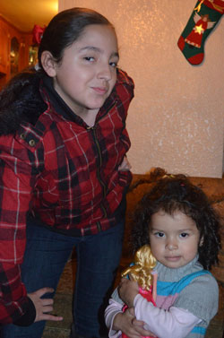

Jose Pereda was born in a rural town in Jalisco, Mexico, commonly know as tequila country. He as in parents immigrated to the United States in 1979. He and his six siblings were raised in the suburbs of Los Angeles. As of today, he is the only one of those siblings that decided to leave the nest and move to a different city.
This is the content for the first column. You can add more text, images, or other elements here.
This is the content for the second column. You can add more text, images, or other elements here.
This is the content for the third column. You can add more text, images, or other elements here.